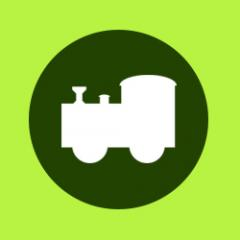
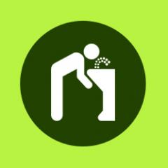

Autotren
Recorre la fauna de los cinco continentes a bordo de nuestro tren y conoce las curiosidades de los animales más característicos del parque.
Cajero automático
Junto a la Oficina de Información, encontrarás un cajero automático donde podrás disponer de dinero en efectivo.
Cambiadores
Ponemos a tu disposición cambiadores en los aseos del parque, tanto en los baños de hombres como de mujeres, para hacer más cómoda la visita de los más pequeños.
Consigna
Si prefieres depositar aquellos objetos que no necesites en tu visita, así como tu equipaje (maleta tipo trolley de cabina), disponemos de alquiler de taquillas por sólo 4,80€.

Fuentes de agua
Existen diferentes puntos repartidos por todo el parque, donde encontrarás fuentes de agua potable.
Merendero
Zoo de Madrid te propone una amplia oferta de restauración, pero si prefieres degustar tu propia comida, podrás hacerlo en el merendero situado junto al delfinario.
Oficina de Información
Disponemos de una Oficina de Información en la entrada al parque, junto a la Cafetería principal, donde además de resolver todas tus dudas, podrás solicitar un mapa gratuito con toda la información relevante para tu visita.
Servicio sanitario
Situado al lado del lago de los flamencos, nuestro personal médico atenderá a aquellos visitantes que precisen de asistencia médica.